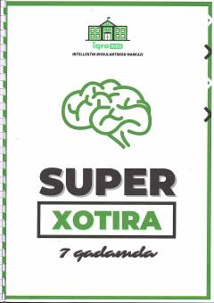

SXXotirani kuchaytirish va ma'lumotlarni tez yodlash bo'yicha amaliy qo'llanma.
Ushbu trening-kitob xotirani rivojlantirish va ma'lumotlarni tezroq yodlab qolish usullarini o'rgatadi. Kitobda amaliy mashqlar, testlar va intellektni oshirishga qaratilgan 7 bosqichli metodika taqdim etilgan.